11 Diving into Machine Learning on Big Data
Cross-Validation, Python for Linear Regression, and Support Vector Machines
Reminder as always: Pull the latest code (I probably made some minor updates)
Related fun OSS product of the day: QUARTO!
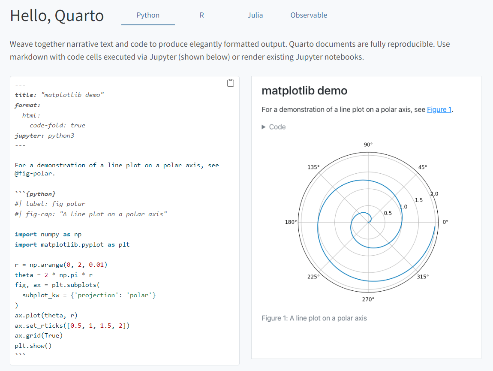 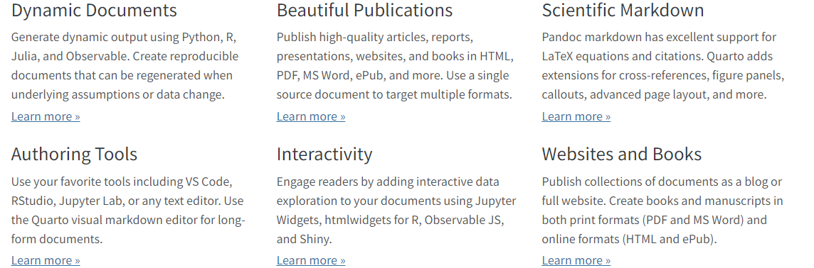
Syllabus check-in
I’ve also added some optional journal articles to Canvas that exemplify the approaches we’re using
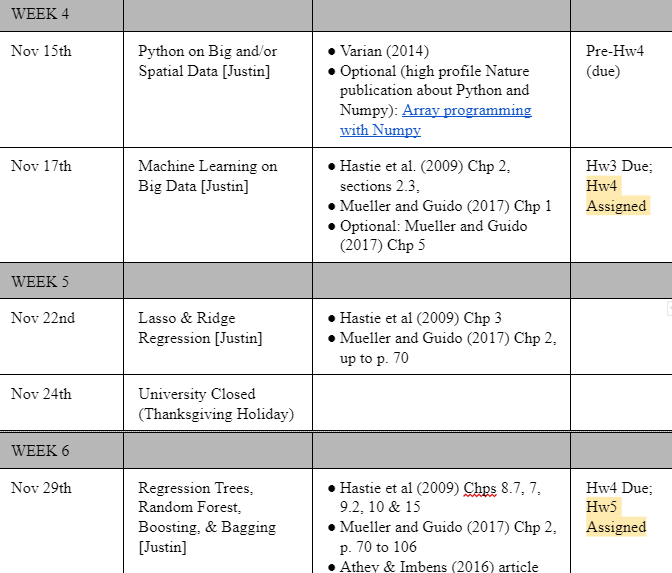
Agenda
- Final word on
Git: pushing and pulling.
- Discuss cross-validation (CV) vs. model performance
- Introduce Scikit-learn via regular linear regression, use it to talk about CV
- Introduce Support Vector Machines for classification
Git push and pull
What happens when I make a change and how does everyone stay synced.
Suppose I make an edit on my Workstation
Suppose I ad some extremely important new code to our workbook from last lecture.
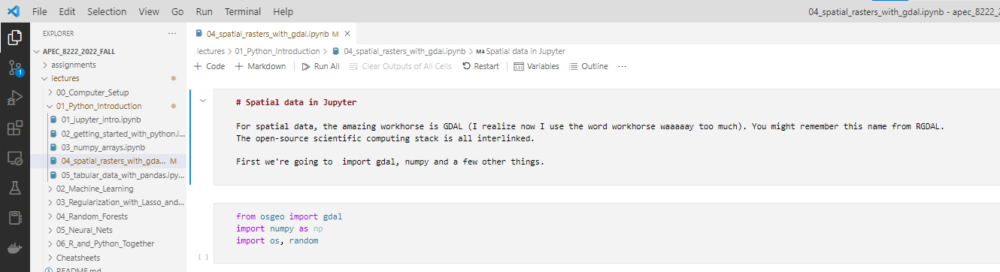
Git realizes that my file now doesn’t match the repository
First thing you’ll notice is the file changes to brown/orange and has an “
M” for modified by it.- 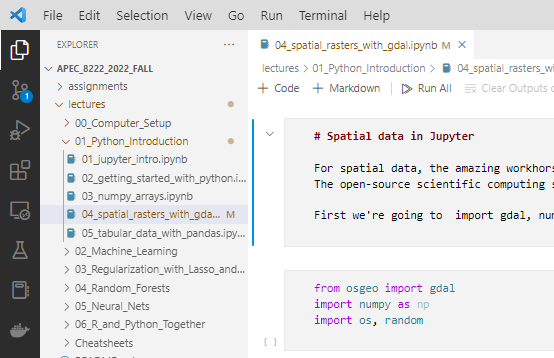
How do I get this into the online repository?
- Click on the Source Control tab and you will see this file listed in the “
Change List”- 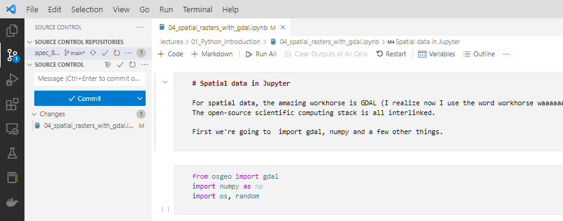
- Because I’m in charge of this repository, I want to
“commit”this file and then“push”it to the repository.- 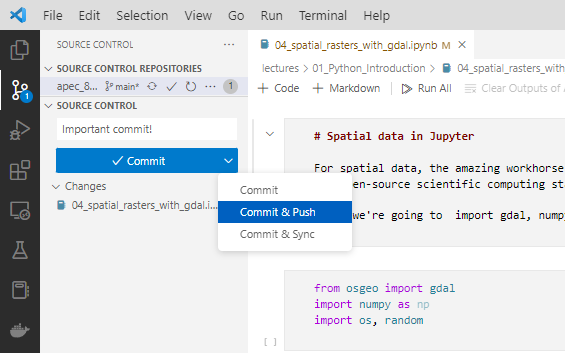
- I type a
commit message(REQUIRED and will silently fail if not), and then selectCommit and Push.
- Now my Source Control tab is clean. That means my local code matches the remote repository

But wait, what happens to other people who also have edited the file?
- Gitting into a predicament.
Suppose your instructor says “okay, now pull the latest code from the course repository…”
- If you do that, VS Code might scold you.
- What does this mean?
- It means YOU have changes on your computer that are different from what’s on GitHub.
- Git can’t pull because it doesn’t know how to resolve the conflict.

Source control tab shows new code is available.
- Go to the Source Control tab
- If your files are different than the repository, you will see those files listed here.
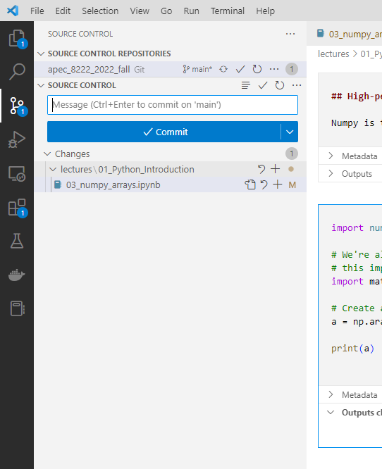
How do we resolve this “merge conflict”?
- If you do not want to keep your changes (simplest case) we can
discard themand then pull.- 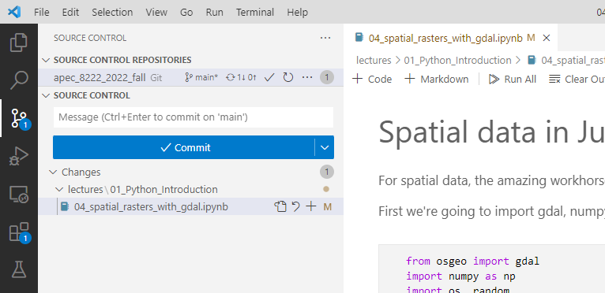
- To do this, go to the
Source Control taband you will see theChange List.- 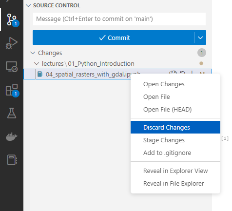
Right-click, and selectdiscard changes.- Now you can happily
Git Pull.- 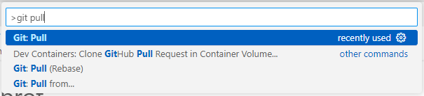
You can also keep both sets of changes by “merging” them

- Here’s an example where I might want to keep them.
- I clicked on the change list and opened it. You can see where I modified the In-class exercise.
- You can research more about this on your own, but for now we’re just going to avoid it
I think the best way to do this is to just move this to your own folder outside the repository.
- There you can preserve all your notes.
- 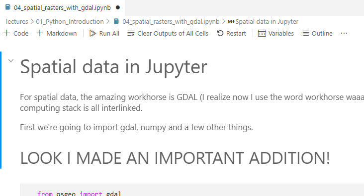
- Once you moved the file (not copied), Git Pull will succeed at getting the newest course code.
- 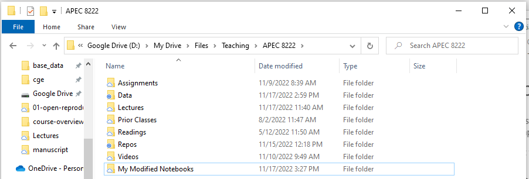
Cross-validation
In my opinion, this is the most important advance in all of Machine Learning from the perspective of an applied economist.
Cross-validation vs model performance
- In either econometrics or ML, there are two tasks in building a model
- Estimating parameters of the model
- Evaluating how well that model does
- Different approaches for these steps between Econometrics and ML:
- Econometrics the above steps involve:
- t- and p-statistics, hypothesis testing, analyzing specific coefficients
- R-values, AIC/BIC, etc
- In ML, the emphasis is different. The above steps in ML are:
- Mostly absent in isolation, but included in step 2.
- Determined by cross-validation of the model.
- Econometrics the above steps involve:
Returning to the complexity tradeoff.
- Recall: Overfitting a model is making the model overly complex to that accuracy falls on the test data.

- We will talk about ways to methodologically hit the “sweet spot” of model complexity.
- How do we find this sweet-spot? Cross validation
- First though, let’s illustrate why overly-complex models can UNDER-perform.
The source of the “sweet spot” in model complexity.
The complex model is super accurate on the training data.
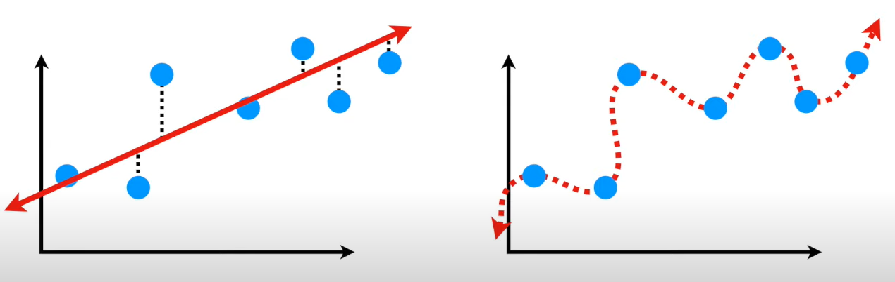
With new data, the complex model is much worse. Notice that the simple model performs about the same.
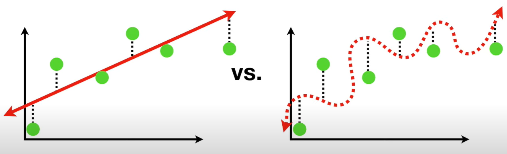
Operationalizing Cross-Validation
Splitting data and Cross-Validation
- In this course, we will use
scikit-learnto illustrate this. Scikit-learnhas nice built-in functions to split our data into training and test data.- This is the first step of cross-validation approaches.
- We are going to set aside the data and make sure we never use it again until the very end.
We train the model on a second split of the data
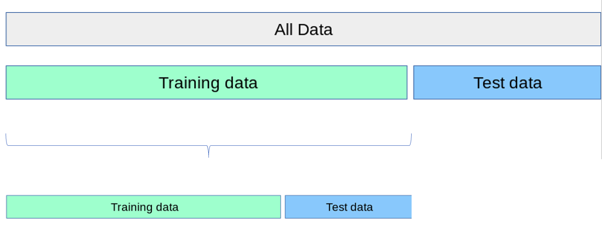
To train our model, cross-validation creates a second split of the training data. ML algorithms will iteratively try different models/coefficients on this second spit, using whichever performs best on the training-test data.
But we can do MORE than that!
Splitting into MANY Splits and Folds
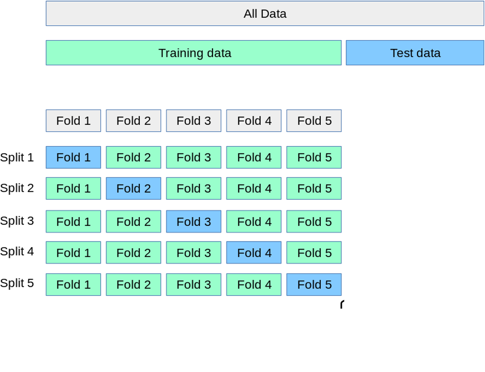
- First slice your data into n-folds (here \(n\) is 5)
- Create Split \(n\) by defining the test-data as fold 𝑛 and the training data as the other Folds.
- Test your model on all different splits.
- Report the mean-squared error (MSE) over all the splits
- Why are we doing this?
- Iteratively find the best model.
Final model performance analysis

- Once the best set of parameters are found, the model is compared against the test data from the first split.
- Final performance assessment then is done with calculating the MSE of the model prediction of
Test_XforTest_Y - This method is SUPER FLEXIBLE
- It could compare totally dissimilar models in a rigorous way.
- Will helps us choose “tuning-” or “hyper-parameters”
Switch to VS Code
Open Lectures\02_Machine_Learning\01_Linear_Regression.ipynb
Support Vector Machines
Motivation: classify inputs into categories Approach: draw a line (hyperplane) separating observations from different categories
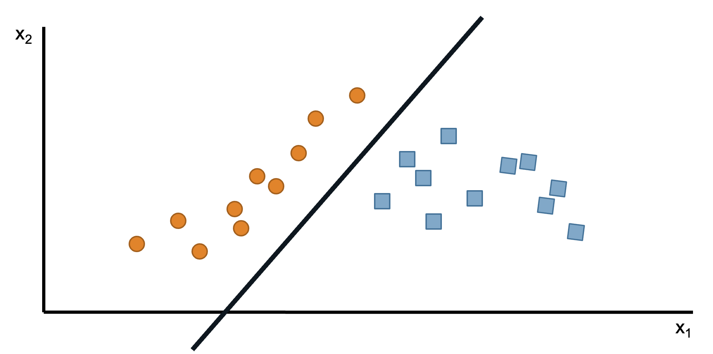
Issue 1: Many lines might work. Which one should we choose?
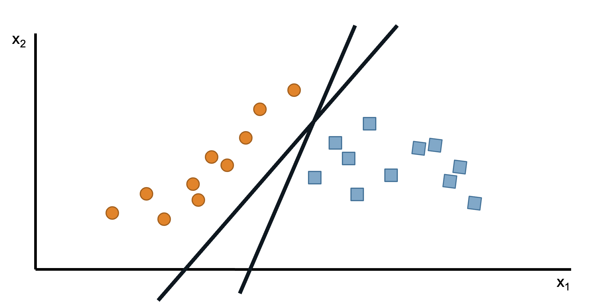
A: Pick the line with the largest ‘margin’ – distance to nearest points on either side
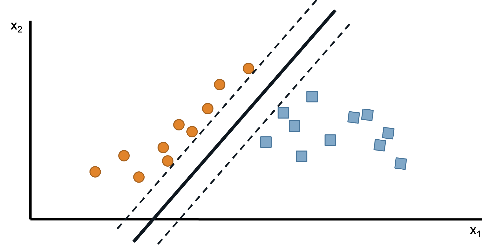
SVMs: naming digression
Those nearest points determine the ‘support vectors’. I think of it as a little person heroically holding up the margin lines.
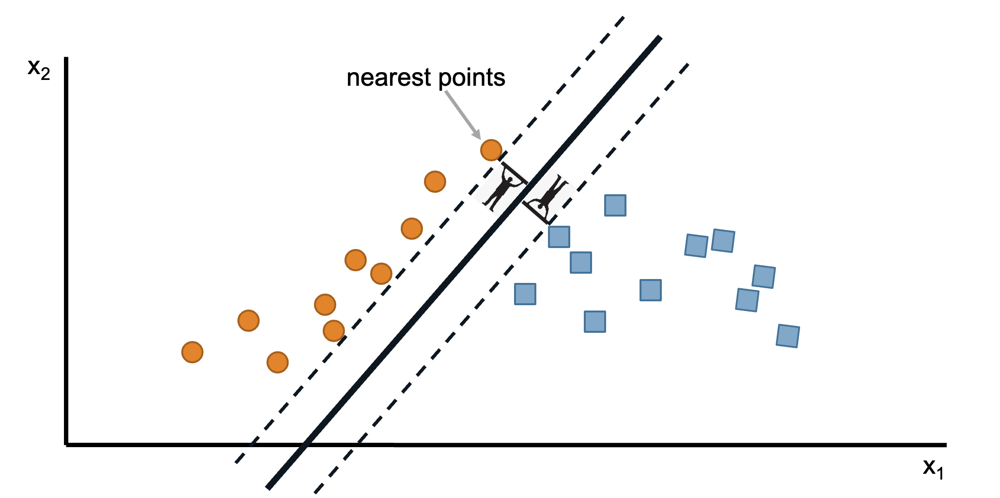
SVM: math preliminaries
With more than two dimensions, we can define this as a hyperplane
\[ X \beta+b=0 \]
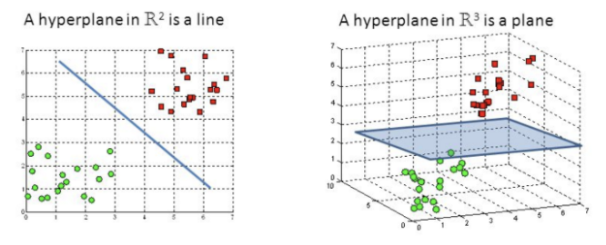
Points above a hyperplane will have \(x_i^T \beta+b>0\), while points below have \(x_i^T \beta+b<0\)
Denote the distance from a support vector \(x_s\) to the hyperplane as \(M\) (the margin).
SVM: objective
Our goal will then be to choose \(\beta, b\) to maximize \(M\), subject to the constraint that all points must be at least a distance \(M\) from the hyperplane.
We can write this as \[ \begin{gathered} \max _{\beta, b} M \\ \text { such that } \\ y_i \frac{\left(x_i^T \beta+b\right)}{\|\beta\|} \geq M \forall i \end{gathered} \]
But, maybe no lines work perfectly. What can we do?
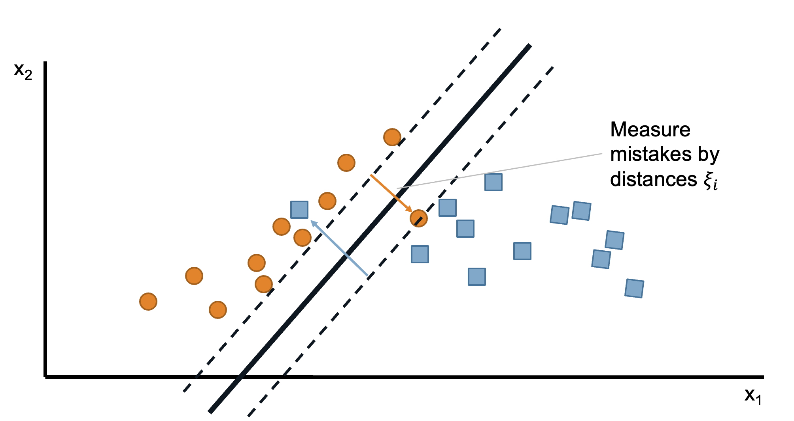
New goal: fit as many instances as possible between the lines while limiting the margin violations.
We can write this as \[ \begin{gathered} \max _{\beta, b} M \\\\ \text { such that } \\\\ y_i \frac{\left(x_i^T \beta+b\right)}{\|\beta\|} \geq M \forall i \\\\ \sum_i \xi_i \leq \gamma \end{gathered} \]
\(\sum_i \xi_i \leq \gamma\): add some sort of penalty on misclassifications
Many forms of this penalty term are possible. Here is the simplest one that just says limit sum of misclassification to be below some threshold \(\gamma\).
You might be wondering, wouldn’t this all depend on the \(\gamma\) value?
Yes it does. And we will use Cross-validation to find the best value for this “hyperparameter”.
We choose \(\gamma\) via CV!
- Iteratively try all values of \(\gamma\).
- Whichever one predicts best across the many splits is what we will use.
- Thus, we have systematically determined exactly how many outliers we should ignore
- From the perspective of out-of-sample performance.
Switch to VS Code
Open Lectures\02_Machine_Learning\02_SVM.ipynb